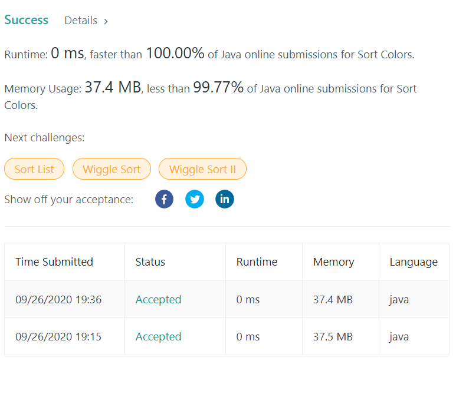

👀 문제
https://leetcode.com/problems/sort-colors/
👊 도전
1. 설계
- zero, one, two 인덱스를 두고 0이면 two, one, zero, 1은 two, one, 2는 two 순으로 값을 갱신한다.
2. 구현
1
2
3
4
5
6
7
8
9
10
11
12
13
14
15
16
17
18
19
20
21
22
23
/**
*
* @author HEESOO
*
*/
class Solution {
public void sortColors(int[] nums) {
int zero=0, one=0, two=0; // 해당 값으로 채운 마지막 인덱스
for(int i=0;i<nums.length;i++){
if(nums[i]==0){
nums[two++]=2;
nums[one++]=1;
nums[zero++]=0;
}
else if(nums[i]==1){
nums[two++]=2;
nums[one++]=1;
}
else nums[two++]=2;
}
}
}
3. 결과

🤟 성공 🤟
어떻게 이런 생각을 하는거지요… 아무 생각없이 Arrays.sort()썼다가, 라이브러리를 쓰지 말고 one pass에 공간복잡도 O(1)인 코드를 만들어라길래 다른 코드를 참고했다.
4. 설명
- 각 마지막 인덱스를 활용한다
- zero, one, two는 각 숫자의 마지막 인덱스이다. nums[] 배열을 새로운 값으로 바꾸는 중에 특정 시점의 0, 1, 2의 마지막 인덱스와 같다.
- 같은 배열안에서 값을 바꾸면 원래 값이 손실되는 경우가 있을 것 같았는데, zero, one, two 갱신 순서를 통해 이를 해결했다.
- 예를 들어 0이면 two, one, zero 순으로 값을 바꿔서 뒤에서부터 값이 밀리게 하여 손실을 없앴다. 앞에서부터 밀면 뒤에 값이 사라진다.
- 0이면 two, one, zero를 다 밀어야 한다. 1이면 two, one만 밀면 되고, 2이면 two 하나만 밀면 된다.
- 각 변수는 현재 해당 숫자를 넣을 위치로, ++을 통해 다음 사용을 염두했다.